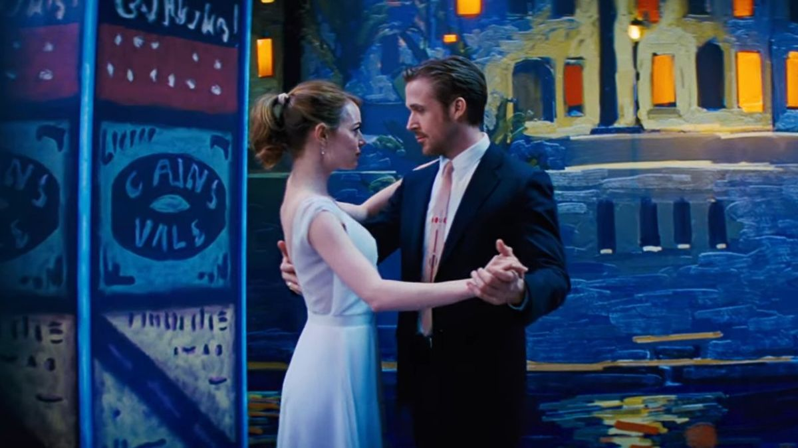

In the amazing movie “La La Land”, colours aren’t just there to look pretty. They’re like feelings
painted on the screen, making the story even more exciting. The director, Damien Chazelle, uses lots of
different colors to make us feel like we’re right there with Mia and Sebastian, experiencing their love
and dreams. Whether it’s the bright clothes they wear or the magical places they go, each color helps
tell the story and make it feel real.
Here is an animated hexagon which shows the colours that were used the most in La La Land.
“La La Land” dazzles from the outset with its kaleidoscope of colors, as Mia and Sebastian dance their
way through traffic in a breathtaking opening sequence. The film’s costumes burst with energy and
personality, reflecting the characters’ dreams and aspirations. During the musical numbers, such as
“Another Day of Sun” and “Someone in the Crowd,” the vibrant attire of the performers contrasts with the
muted tones of everyday life, transporting the audience into a world of whimsy and wonder.
The meticulous process of color grading imbues “La La Land” with a dreamlike quality, enhancing its
visual appeal. Bold and vibrant tones leap off the screen, enveloping viewers in a world of enchantment
and possibility. From the vivid sunsets over Los Angeles to the neon-lit streets of the city, each frame
is a canvas alive with color, inviting audiences to lose themselves in its beauty.

Colors in “La La Land” are more than just aesthetic choices; they’re powerful symbols that convey deeper
meaning and emotion. Yellow, a recurring motif throughout the film, symbolizes hope, optimism, and the
pursuit of dreams. Blue, on the other hand, represents melancholy, longing, and the harsh realities of life.
These symbolic associations enrich the storytelling, allowing audiences to connect with the characters on a
profound level.
“La La Land” is a symphony of color and emotion, where every shade is carefully orchestrated to captivate
and inspire. From the vibrant costumes to the evocative lighting, each element contributes to the film’s
mesmerizing visual tapestry. Through the language of color, Damien Chazelle invites us to embark on a
journey of love, dreams, and the pursuit of artistic excellence — a journey that resonates long after the
final curtain falls.